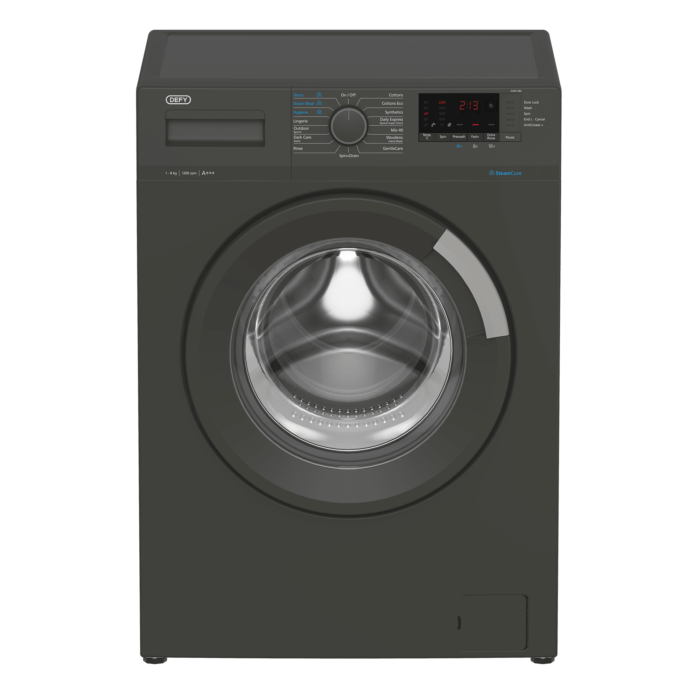
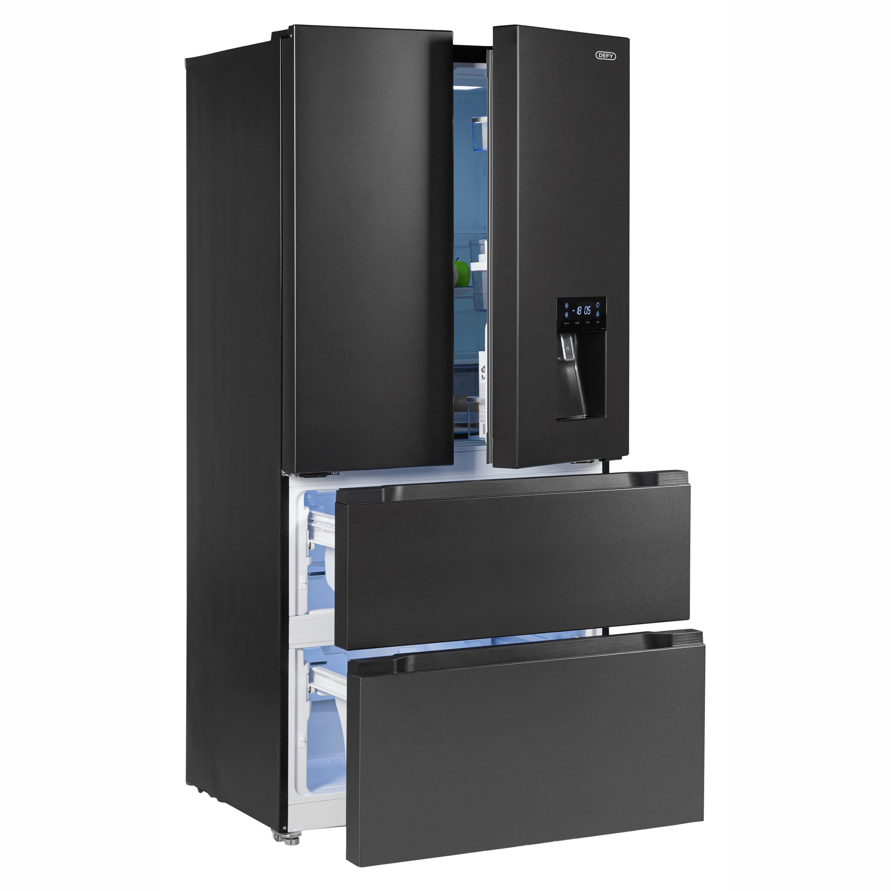
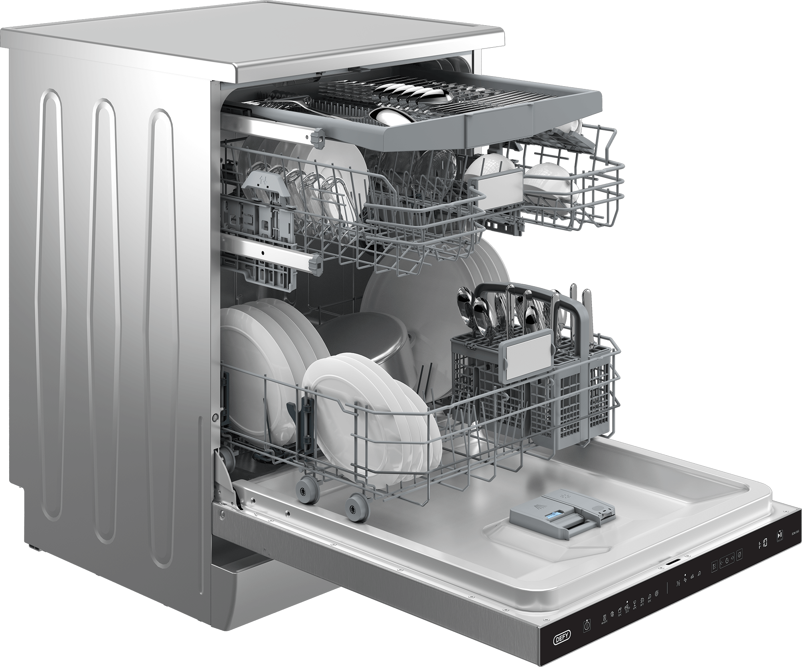
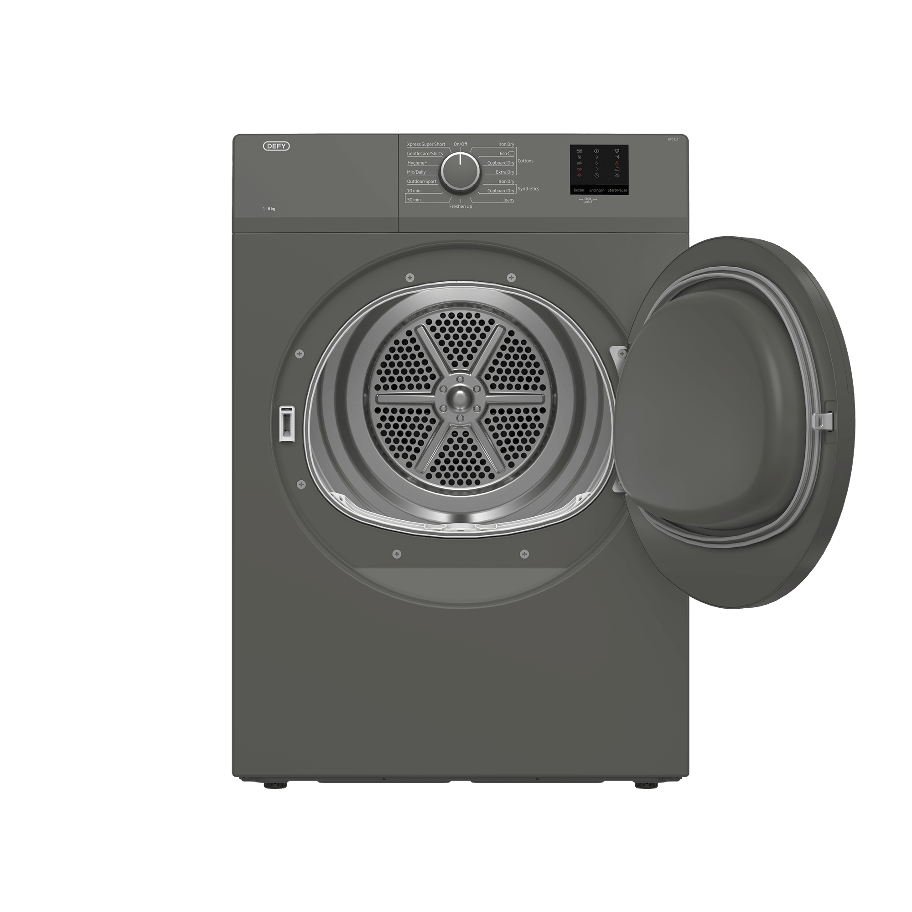

Defy Appliance Repairs in Cape Town
Gumption Solutions are Cape Town's trusted Defy appliance repair specialists. Whether your Defy fridge is not cooling, your Defy washing machine is not spinning, your Defy dishwasher is leaking, or your Defy tumble dryer has stopped heating , our certified technicians diagnose and fix all Defy appliances fast, often the same day.


Certified Defy appliance repairs across Cape Town
Defy is South Africa's best-known and most widely used home appliance brand. Built specifically for South African homes and conditions, Defy fridges, washing machines, dishwashers, and tumble dryers are found in millions of South African households. When your Defy appliance needs a repair, Gumption Solutions is Cape Town's most experienced choice.
Our technicians have deep hands-on experience with the complete Defy appliance range, from Defy Demi fridges and Defy metallic washing machines to Defy freestanding dishwashers and Defy front-loader tumble dryers. We understand Defy's locally designed systems and stock Defy-compatible spare parts on every vehicle.
We serve all Cape Town suburbs including Durbanville, Milnerton, Bellville, Stellenbosch, Paarl, Constantia, Hout Bay, Sea Point, Fish Hoek, Somerset West, and surrounding areas. Same-day Defy repairs available when you call before 11am.
Book your Defy repair
Tell us about your Defy appliance and the problem. We'll get back to you within 30 minutes. Prefer WhatsApp? Message us here.
- Same-day service available
- All Defy models repaired
- 6-month warranty on all repairs
- Upfront quote, no surprises
Defy appliances we repair in Cape Town
Every Defy appliance, every fault. Same-day service available across Cape Town.

Defy Refrigerator Repairs
Defy fridges are iconic in South African homes , from the classic Defy Demi fridge-freezer combos to Defy double-door and side-by-side models. Defy refrigerators are designed for South African power conditions and the local climate, and when they develop a fault, our Cape Town technicians know exactly how to fix them.
We repair all Defy fridge models, including compressor failures, thermostat faults, gas leaks and regassing, defrost system repairs, and door seal replacements. We also repair Defy chest freezers and Defy upright freezers used in South African homes and businesses.
Common Defy fridge problems we fix:
- Defy fridge not cold enough , food not staying fresh and internal temperature rising
- Heavy frost build-up in the Defy freezer compartment that won't clear automatically
- Puddle of water forming underneath or in front of the Defy fridge unit
- Defy compressor not switching on or running non-stop without achieving proper cooling
- Defy thermostat not responding to temperature adjustments on the control panel
- Refrigerant leak , Defy fridge requires R600a or R134a gas top-up or recharge
- Defy fridge door seal perished, peeling away, or no longer forming a proper seal
- Loud rattling or buzzing sound coming from the back of the Defy fridge
- Defy fridge interior light not illuminating when the fridge door is opened
Defy Washing Machine Repairs
Defy washing machines are popular across Cape Town homes. From Defy front-loader and Defy top-loader washing machines to Defy twin-tub models, our technicians have repaired them all. Defy machines are built tough for South African conditions but are not immune to mechanical wear and fault codes.
We repair Defy washing machine pumps, bearings, brushes, belts, door seals, motors, and electronic control boards. We also clear Defy washing machine error codes and perform thorough diagnostics to identify and fix the root cause of the fault rather than a temporary fix.
Common Defy washing machine problems we fix:
- Defy washing machine drum not spinning at all or barely moving during the cycle
- Water remaining in the Defy drum after the cycle , machine failing to drain
- Defy washing machine door handle broken or door not releasing after the cycle
- Water leaking from the soap dispenser drawer, door seal, or underneath the machine
- Loud banging or violent shaking during the Defy spin cycle , drum imbalance suspected
- Rumbling noise throughout operation , Defy drum bearings worn and need replacing
- Defy washing machine carbon brushes worn , motor not starting or turning
- Error codes flashing on the Defy washing machine display panel
- Wash water not heating up during a hot or boil cycle on the Defy washing machine

Defy Dishwasher Repairs
Defy freestanding dishwashers are a popular choice in Cape Town homes and are known for their value and reliability. When your Defy dishwasher is not cleaning properly, not draining, leaking, or displaying an error, Gumption Solutions has the experience and parts to fix it fast.
We repair Defy dishwasher wash pumps, drain pumps, heating elements, spray arms, door seals, latches, and control boards. We work on all available Defy dishwasher models and carry commonly needed Defy dishwasher parts on every callout.
Common Defy dishwasher problems we fix:
- Defy dishwasher not cleaning dishes properly , spray arm blockage or pump fault suspected
- Water sitting at the bottom after the cycle ends , Defy drain pump suspected faulty
- Defy dishwasher leaking from the door seal or pooling at the base of the machine
- Defy dishwasher not heating the wash water , dishes not being sanitised correctly
- No water entering the Defy dishwasher at the start of the selected cycle
- Defy dishwasher door catch broken , not closing or latching shut properly
- Defy dishwasher spray arms cracked, blocked, or not rotating during the programme
- Loud rattling or grinding noise during the Defy dishwasher wash cycle

Defy Tumble Dryer Repairs
Defy tumble dryers are vented and condenser models found in many Cape Town households. Defy dryers are reliable machines but over time can develop heating faults, belt breakages, and drum bearing issues. Gumption Solutions repairs all Defy tumble dryer models across Cape Town.
We repair Defy tumble dryer heating elements, thermostats, belts, drum bearings, idler pulleys, motors, and control boards. Most Defy tumble dryer repairs are completed on the first visit, with parts carried on every vehicle.
Common Defy tumble dryer problems we fix:
- Defy tumble dryer not heating up at all , heating element suspected blown
- Defy dryer drive belt broken , drum completely still when the machine is switched on
- Defy drum bearings worn , loud rumbling noise throughout the drying cycle
- Clothes still noticeably damp at the end of a full Defy drying cycle
- Defy tumble dryer not switching on , no response from the controls or display
- Defy dryer overheating and cutting out automatically mid-cycle
- Defy dryer door seal or door catch worn , not closing or sealing properly
- Squeaking loudly from the Defy drum area during operation
Why Cape Town trusts us for Defy repairs
Experience, reliability, and a guarantee you can count on.
Defy-Experienced Technicians
Our technicians have hands-on experience diagnosing and repairing Defy appliance faults across all Cape Town suburbs. We understand Defy's engineering and have the right diagnostic tools and parts to fix it right.
Parts On Board , Fixed First Visit
We stock commonly needed Defy-compatible spare parts on our vehicles, meaning most Defy appliance repairs are completed on the first visit without waiting for parts.
6-Month Repair Warranty
Every Defy appliance repair carries a full 6-month warranty on both parts and labour. If the same fault returns within that period, we come back and fix it at no charge.
Same-Day Defy Repairs
Call before 11am and we will do our best to reach you the same day. We understand the urgency of a broken fridge or washing machine and prioritise fast response times.
Transparent, Honest Pricing
We diagnose your Defy appliance and give you a clear upfront quote before any work begins. No hidden fees, no surprises. We always advise honestly on repair vs replacement.
All Cape Town Suburbs
We repair Defy appliances across all Cape Town suburbs , from Durbanville and Stellenbosch to Sea Point and Fish Hoek. We come to your home or business.
Defy repairs across all Cape Town suburbs
We come to you , no need to transport your appliance.
We repair other brands too
Defy is one of many brands we specialise in across Cape Town.